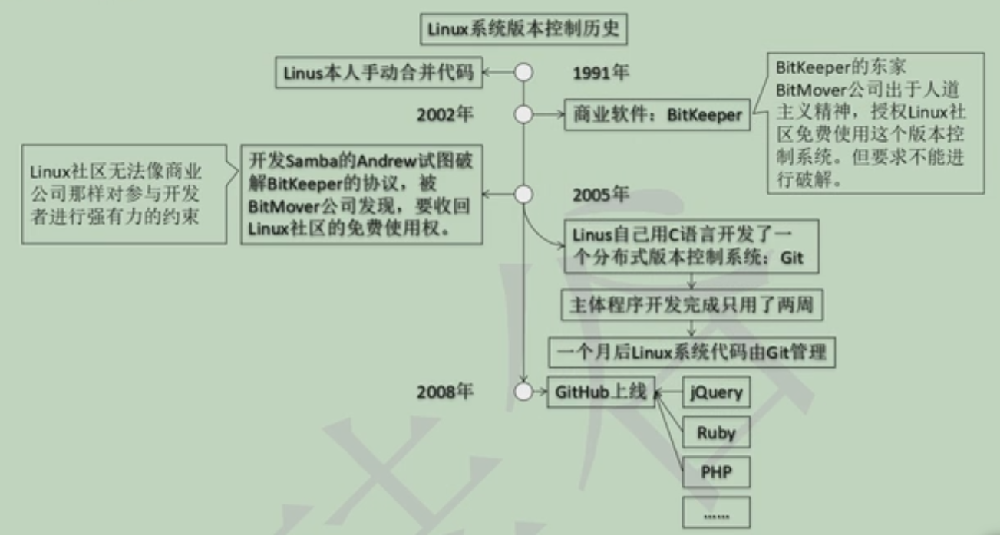
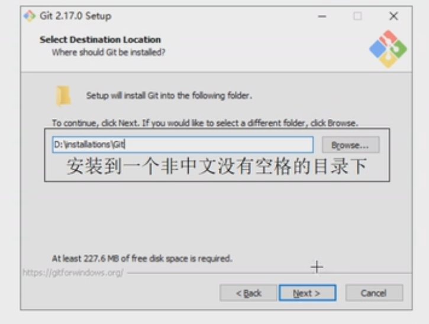
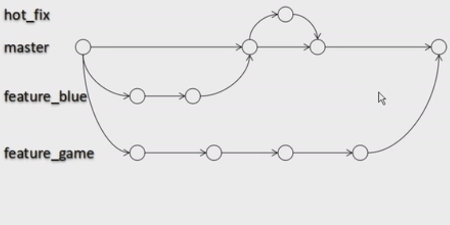

-
一、常见版本控制器
-
- 1.CVS
-
- 2.SVN
-
SVN是Subversion的简称，是一个开放源代码的版本控制系统，相较于RCS、CVS，它采用了分支管理系统，它的设计目标就是取代CVS。互联网上很多版本控制服务已从CVS迁移到Subversion。说得简单一点SVN就是用于多个人共同开发同一个项目，共用资源的目的。
-
- 3.ClearCase
-
- 4.VSS : (以上都是集中式版本控制系统)
-
- 5.GIT : (分布式版本控制系统)
-
Git(读音为/gɪt/。)是一个开源的分布式版本控制系统，可以有效、高速地处理从很小到非常大的项目版本管理。Git 是 Linus Torvalds 为了帮助管理 Linux 内核开发而开发的一个开放源码的版本控制软件。 Torvalds 开始着手开发 Git 是为了作为一种过渡方案来替代 BitKe
分布式相比于集中式的最大区别在于开发者可以提交到本地，每个开发者通过克隆（git clone），在本地机器上拷贝一个完整的Git仓库。
-
-
二、git的优势
- 1.分布式，强调个体
- 2.公共服务器压力和数据量都不会太大
- 3.速度快，灵活，分支操作非常快捷流畅
- 4.任意两个开发者之间可以很容易的解决冲突
- 5.离线工作,大部分操作在本地完成，不需要联网
- 6.与Linux命令全面兼容
- 7.完整性保证
-
三、版本控制工具应该具备的功能
-
- 1.协调修改
- 多人并行不悖的修改服务器端的同一个文件
-
- 2.数据备份
- 不仅保存目录和文件的当前状态，还能够保存每一个提交过的历史状态
-
- 3.版本管理
- 在保存每一个版本的文件信息的时候要做到不保存重复数据，以节约存储空间，提高运行效率。这方面SVN采用的是增量式管理的方式，而git采取了文件系统快照的方式
-
- 4.权限控制
- 对团队中参与开发的人员进行权限控制
- 对团队外开发者贡献的代码进行审核--Git独有
-
- 5.历史记录
- 查看修改人，修改时间，修改内容，日志信息
- 将本地文件恢复到某一个历史状态
-
- 6.分支管理
- 允许开发团队在工作过程中多条生产线同时推进任务，进一步提高效率
-
-
四、版本控制简介
-
- 1.版本控制
- 工程设计领域中使用版本控制管理工程蓝图的设计过程，在IT开发过程中也可以使用版本控制思想管理代码的版本迭代。
-
- 2.版本控制工具
- 思想：版本控制
- 实现：版本控制工具
- 集中式版本控制工具： CVS , SVN , VSS...
- 分布式版本控制工具： git
-
-
五、git简史
 -
六、git的下载和安装
-
- 1.下载地址
- https://git-scm.com/
- 根据自己的电脑系统下载对应的版本
-
- 2.安装
- 安装在任意全英文目录下 
- 无脑一直点 next ， 最后 install 安装
-
-
七、git的结构
-
- 1.工作区
- 写代码
-
- 2.暂存区
- 临时存储
-
- 3.本地库
- 历史版本
-
-
八、git和代码托管中心
-
- 1.局域网环境下
- GitLab 服务器
-
- 2.外网环境下
- GitHub
- 码云
-
- 3.代码托管中心的任务：
- 维护远程库
-
-
九、本地库和远程库
-
- 1.团队内部协作
- 项目经理创建远程库，push 代码到远程库，其他程序员可以加入到团队 clone 远程库的代码，修改后 push 到远程库,由项目经理 pull 程序员修改的代码， 审核 push,最终决定是否 merge
-
- 2.跨团队协作
- 项目经理创建远程库，push 代码到远程库，（非项目团队的程序员无权 clone 代码）其他团队的程序员可以 fork 代码到自己的远程库，修改后 pull request 给原来的远程库，项目经理审核，最终决定是否 merge
-
-
十、git的命令行操作
-
1.本地操作
-
1.1 本地库初始化操作
1.1.1 在任意目录下右键打开 git bash here 可以打开git的控制台，所有操作都可以在控制台中完成 ，git与linux完全兼容，如果会Linux，使用git将如鱼得水。
1.1.2 打开控制台之后可以通多 cd 跳转到你要工作的文件夹， 此处不做累述（如果不会使用，请在要工作的目录下运行git控制台）
1.1.3创建目录： mkdir 目录名称， 例如： mkdir project 可以在运行目录下创建一个名为project的目录
1.1.4 在控制台输入ll 可以查看当前目录下所有文件（不包括隐藏文件）
1.1.5 输入 git init 初始化本地库，此时在当前文件夹下会有一个隐藏的文件夹 .git,请不要随便修改这个文件夹
-
1.2 设置签名
-
- 1.2.1 形式
-
用户名：tom
email地址：abc@github.com
-
- 1.2.2 作用：
-
区分不同的开发人员
-
- 1.2.3 命令：
-
1.2.3.1 项目级别/仓库级别：仅在当前本地库范围内生效
设置名称：git config user.name tom_pro
设置邮箱：git config user.email abc_pro@github.com
信息存储在当前文件夹的 .git/config里面，通过 cat .git/config可以查看配置文件
1.2.3.2 系统用户级别：登录当前操作系统的用户范围
设置名称：git config -global user.name tom_glo
设置邮箱：git config -global user.email abc_pro@github.com
配置好 cd ~，通过 cat .gitconfig 查看
1.2.3.3 级别优先级
就近原则：项目级别优先于系统用户级别，二者都有时采用项目级别的签名
如果只有系统用户级别签名，就以系统用户级别签名为准
二者必须有一个，不允许一个也没有
-
-
1.3 基本操作
1.3.1 显示当前状态： git status ， 红色文件为还没有提交到暂存库的文件，绿色文件表示已经提交到暂存库了，可以 commit 到远程库
1.3.2 新建一个文件： vim 文件名.后缀
1.3.3 将指定文件提交到暂存库： git add 文件名.后缀
1.3.4 将提交到暂存库的指定文件恢复到工作区： git rm --cached 文件名.后缀 ，恢复后 查看状态时，移除的文件会变红
1.3.5 将暂存库的指定文件提交到本地库：git commit 文件名.后缀，提交后会要求提交 message 提交信息（git自动调用了vim编辑器，输入：set nu可以显示行号，按 i键 可以进入编辑模式 按 Esc键 退出编辑模式，输入 :wq 退出vim编辑器），一般记录一下本次提交的基本信息（备注的意思），方便以后需要的时候回调
1.3.6 修改文件后查看当前文件状态会显示：modified : 文件名.后缀 , 此时使用 git add 文件名.后缀 可以更新当前文件到缓存库 ， 使用 git checkout -- 文件名.后缀 可以取消工作区指定文件的修改，将工作区的指定文件恢复到缓存库的指定文件
1.3.7 提交文件到工作区的同时，提交备注信息：git commit -m "备注信息" 文件名.后缀 ， 这是一种简写的方式，可以不经过vim编辑器就实现备注
1.3.8 查看版本的历史记录： git log ， 当显示的数据很多无法一页显示的时候 按 space键 可以翻页查看
1.3.9 查看版本的历史记录，每一条记录只显示一行： git log --pretty=oneline , 此时只显示 hash值和备注信息 ，第一行显示 HEAD 的指针当前指向的 branch , 默认指向 master 主分支
1.3.10 查看版本的历史记录，每一条记录只显示一行（简写，只有之前的版本，回调之后不显示新版本）： git log --oneline , 此时只显示 hash值的前面“七位数”和备注信息 ，第一行显示 HEAD 的指针当前指向的 branch , 默认指向 master 主分支
1.3.11 查看版本的历史记录，每一条记录只显示一行（简写，并可以显示回调到之前的版本需要几次，新旧都有）： git reflog , HEAD@{1} 表示当前版本的前一个版本，HEAD@{3} 表示当前版本的前三个版本，以此类推
1.3.12 版本的前进和后退操作：本质就是修改 HEAD 的指针
1.3.13 版本的前进和后退操作，基于索引值的操作【推荐使用的方式】：git reset --hard 对应版本的索引值（hash值的前面“七位数”）
1.3.14 版本的前进和后退操作，使用^符号(不建议使用)：只能后退，不能前进 git reset --hard HEAD^ 返回到以上一个版本 ， ^ 的个数表示 回退到之前第几个版本 , git reset --hard HEAD^^^
1.3.15 版本的前进和后退操作，使用~符号(不建议使用)：只能后退，不能前进 git reset --hard HEAD~3 返回到之前三个版本 ， ~n 的n表示 回退到之前n个版本
- 1.3.16 reset 命令的三个参数对比
-
1.3.16.1 --soft 参数： 仅仅在本地库移动HEAD指针
1.3.16.2 --mixed 参数： 在本地库移动HEAD指针，重置暂存库
1.3.16.3 --hard 参数： 在本地库移动HEAD指针，重置暂存库，重置工作区
- 1.3.17 删除文件
-
1.3.17.1 删除本地库的指定文件：rm 文件名.后缀 然后 添加 add 到缓存库，再 commit 到工作区 ，新版本就不存在已经删除的文件
1.3.17.2 确切地讲，删除的文件只是当前版本的文件，由于git的特性，如果我们回调到之前的版本，原来要删除的文件依然存在，所以，我们并不能删除任何文件，除非破坏 .git 文件夹的内容，然而这样做事 非常危险 的！！！
1.3.17.3 如果已经执行了 rm 和 add 到缓存库，又不想删除这些文件的时候可以执行 git reset --hard HEAD 直接回调到最新版本（因为没有 commit，所以最新版本就是没有删除文件的版本），或者直接回调到一个没有删除的版本 git reset --hard HEAD 指定版本hash值
- 1.3.18 diff 命令对比文件的修改状态
-
1.3.18.1 对比某个文件的状态 ：git diff 文件名.后缀 新修改的工作区文件和缓存库对应的文件的比较
1.3.18.2 对比某个文件的状态 ：git diff HEAD 文件名.后缀 新修改的工作区文件和HAED当前指针对应的文件的比较
1.3.18.3 红色的表示被删除的内容
1.3.18.4 绿色的表示新增的内容
1.3.18.5 如果指定的版本里面没有对应的文件，所有内容都会显示为绿色
1.3.18.6 如果不指定文件名：则比较所有的文件： git diff
-
1.4 分支管理
- 1.4.1 什么是分支
-
在版本控制时，使用多条线同时推进多个任务

- 1.4.2 分支的好处
-
1.4.2.1 同时并行推进多个功能的开发，提高开发效率
1.4.2.2 各个分支在开发过程中，如果某一个分支开发失败，不会影响其他任何分支，失败的分支删除重新开始即可
- 1.4.3 分支操作
-
1.4.3.1 查看当前项目所有分支： git branch -v
1.4.3.2 创建新的分支： git branch 新的分支名
1.4.3.3 切换分支： git checkout 指定的分支名
1.4.3.4 合并分支：合并的时候必须切换到要主分支（或者是要留下的对应的分支），然后执行 git merge 要合并到主分支的分支名
1.4.3.5 解决合并分支时产生的冲突：比如在不同的两个分支上对同一个文件都进行了修改，然后要将这个两个分支合并，此时git不能确定到底应该保存哪一个分支的文件（冲突），git会直接抛出问题（两个分支的不同部分会分别显示出来，并标明归属哪一个分支），由用户决定保留哪一个文件到最终文件（一般这就需要程序员之间互相沟通，最终决定应该留下哪些代码），修改好代码之后，git add 文件名到缓存库，然后 git commit -m "日志信息"到本地库，这是特殊情况，不需要指定文件名， 注意 ：如果指定了文件名会报错！！！
-
-
2.远程库操作
- 2.1 pull，拉取
- 2.2 push，推送
- 2.3 fetch，抓取
- 2.4 merge，合并
-
- 3.代码托管中心的任务：
- 维护远程库
-
-
十一、git保存版本的机制
-
- 1.集中式版本控制工具的文件管理机制
以文件变更列表的方式存储信息。这类系统将它们保存的信息看做是一组基本文件和每个文件随时间逐步积累的差异。
-
- 2.git的文件管理机制
- git把数据看做是小型文件系统的一组快照，每次提交更新时git都会对当前的全部文件制作一个快照并保存这个快照的索引。为了高效，如果文件没有修改，git不再重新存储该文件，而是保留一个链接指向之前存储的文件，所以Git的工作方式可以称之为快照流。
-
- 3.git提交的数据对象
- 每一次提交都会有一个hash值
-
- 4.分支管理的本质
- 就是改变HEAD的指针，并没有动文件
-
-
十二、GitHub
-
- 1.注册账号
-
GitHub官方网站：https://github.com/
1.1 进入网站注册账号
1.2 设置基本信息
-
- 2.创建本地库（前面有）
-
- 3.创建远程库
-
3.1 登录GitHub
3.2 点击 new repository 新建一个库
3.3 验证邮箱地址（第一次创建库操作一次，以后不需要）
3.4 填写仓库的名称
3.5 选择库是公开的还是私有的，私有的库是收费的
3.6 点击创建
-
- 4.本地库push到远程库
-
4.1 点击进入仓库
4.2 复制https 的地址
4.3 在本地库执行git remote add origin 复制过来的远程库的地址
4.4 git remote -v 查看origin ，此时会显示刚刚设置的远程库的地址
4.5 执行 git push origin master 把本地库的文件推到远程库上面的主分支中
4.6 输入GitHub的账号和密码，因为是远程的，所以到等一下
-
- 5.本地库clone远程库的代码到本地
-
5.1 点击进入仓库
5.2 复制 clone download 的地址
5.3 在本地库执行git clone 复制过来的地址
5.4 此时在本地库就有一份远程库复制过来的代码，而且配置也和远程库的一样，但是，如果是一个没有加入团队的人修改的代码，此时无法提交文件到远程库
5.5 加入团队：在远程库的 settings 里面的 collaborators 可以添加新成员，复制邀请的地址（点 copy invite link）发送给要添加的成员
5.6 要加入的成员点击链接，接收邀请，就正是加入团队，被添加的新成员才有权限提交 push 新代码到远程库
-
- 6.pull 代码到本地库
-
6.1 抓取远程库 git fetch origin master
6.2 合并远程库的文件到本地库 git merge origin/master
6.3 拉取：pull 等于 fetch + merge，一般会分开操作（保险起见），而不直接使用 pull
-
- 7. 跨团队合作开发
-
6.1 团队外的成员进入目标库，点击 fork ,可以复制一份远程库的内容到自己的远程库
6.2 团队外的成员就可以 clone 代码到本地库
6.3 修改代码，推送到远程库
6.4 在库界面点击 pull request按钮，然后点击 new pull request ，然后点击 create pull request ，输入一些相关信息，再次点击 create pull request，创建好请求，等待源远程库的项目人审核
6.5 源远程库的项目人到源库点击 pull request按钮，在新界面可以看到其他团队发过来的请求，打开请求点击 commits 查看提交，点击 files changed 查看修改的内容
6.6 在会话当中可以互相交流，点击 continuous 按钮进入会话，在会话底部有一个 merge pull request 按钮，点击就会合并两个库的代码（必须审核清楚，这是一个 危险 的工作）,点击后可以写一些“日志信息”，方便回调，最后点击 confirm merge完成合并。
6.7 把远程库的文件拉取到本地，就是最新的合并后的文件
-
-
十三、SSH免密登录
-
- 1.配置
-
1.1 打开git控制台，跳转到根目录 cd ~
1.2 输入： ssh-keygen -t rsa -C 需要连接的github邮箱地址 ，后面的按默认配置，不需要修改，一直回车
1.3 打开 id_rsa 文件夹 ，复制里面的秘钥（该文件在 系统磁盘:\Users\Administrator\.ssh 里面，在当前控制面板输入cat id_rsa.pub 也可以打开）
1.4 登录GitHub，在用户的 settings 界面点击 SSH and GPG keys，然后点击 new SSH key ,把秘钥复制粘贴到 key 对话框内，并命名一个 title，然后 点击 add SSH key 提交
-
- 2.测试
-
1.1 在GitHub的库界面点击 clone or download 复制 SSH 的库地址
1.2 在控制台输入 git remote add origin_ssh 复制过来的ssh库地址
1.3 输入：git remote -v 查看一下是否添加成功
1.4 随便修改一个文件，提交到本地库
1.5 推送到远程库 git push origin_ssh master，注意：要推送给SSH，然后点击yes，以后就不需要填写用户名和密码了（只能绑定一个账号）
-
-
END、补充
- 1.有很多可视化工具，根据实际需求学习，此处不做累述
-
- 2.git 出现 SSL certificate problem: unable to get local issuer certificate 错误
-
在Windows下的git窗口里使用命令直接去掉ssl的验证：
git config --global http.sslVerify false
- 2.完结撒花